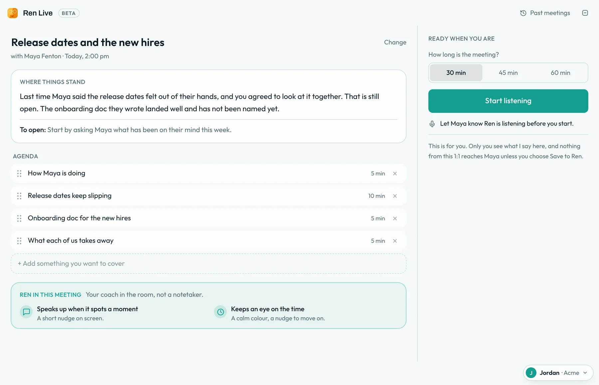
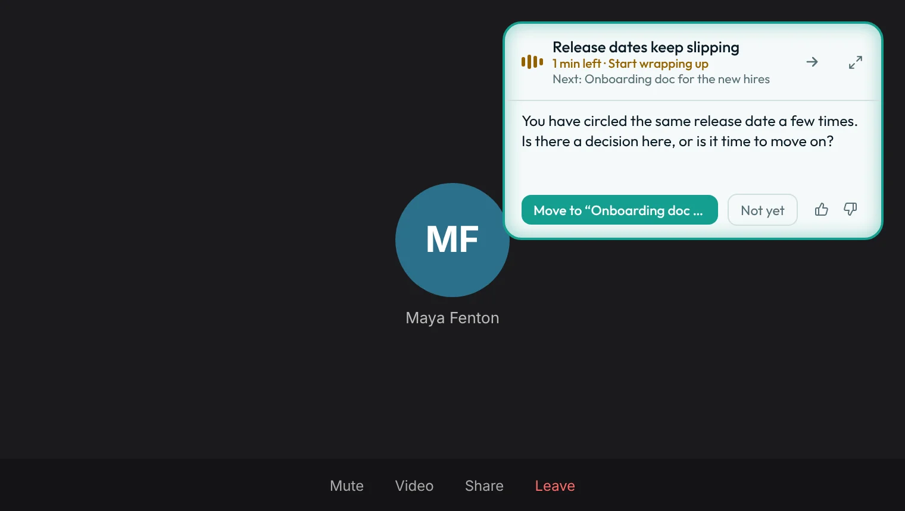
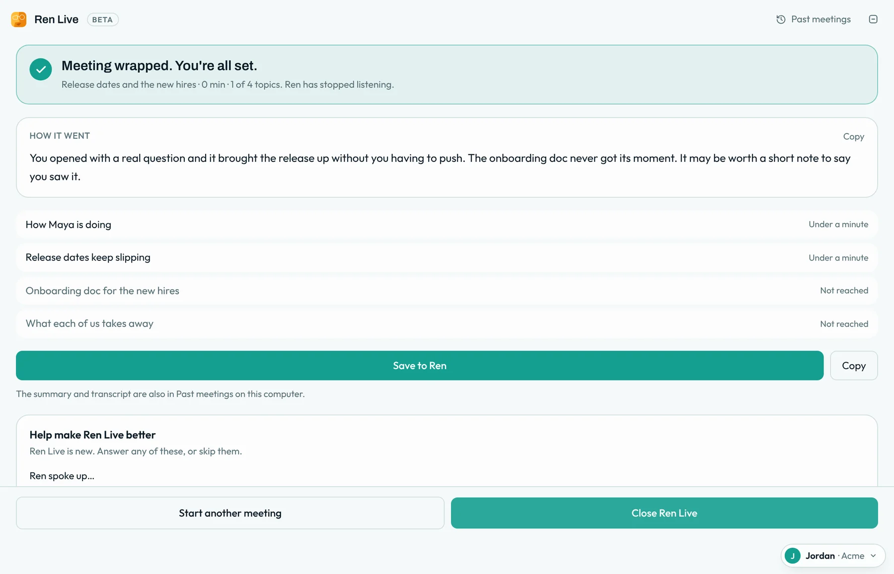
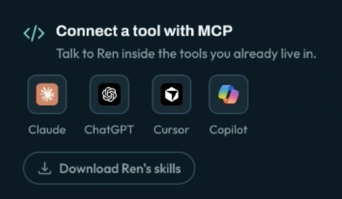
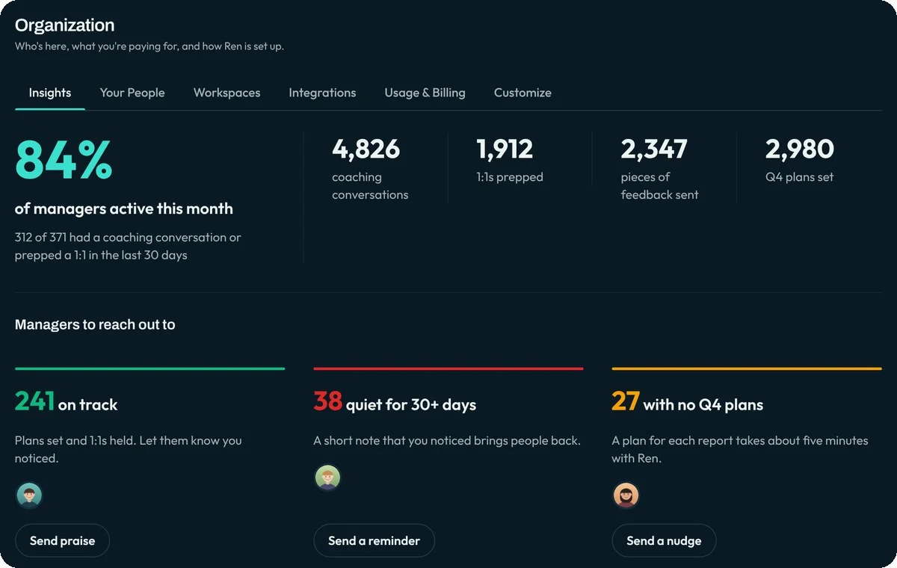
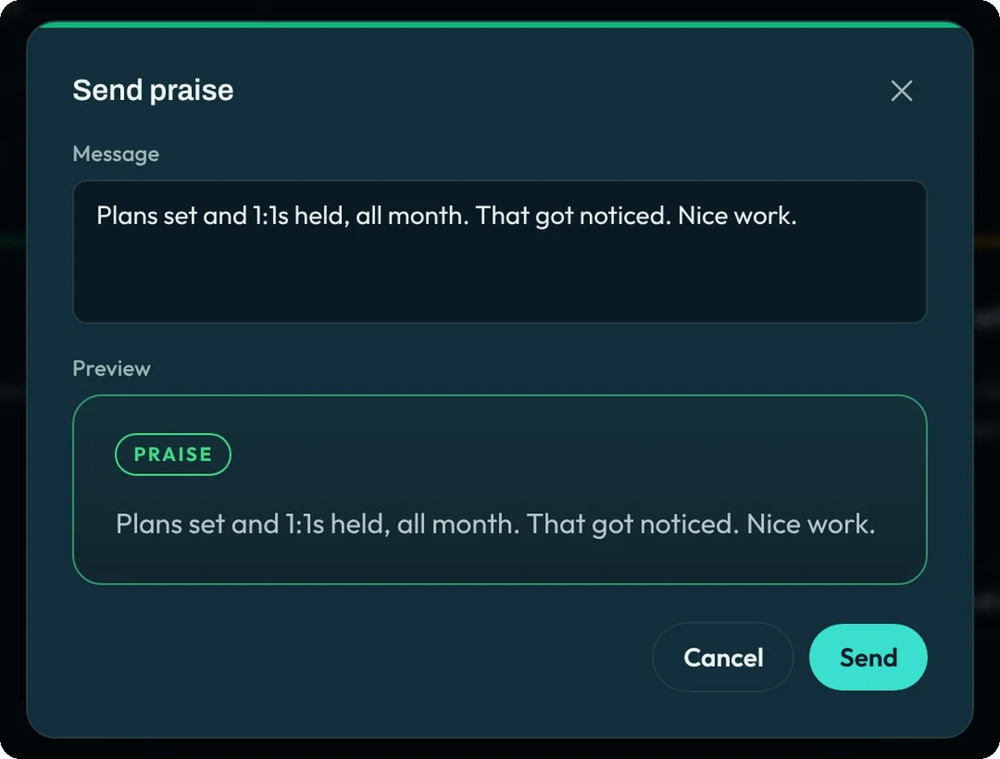
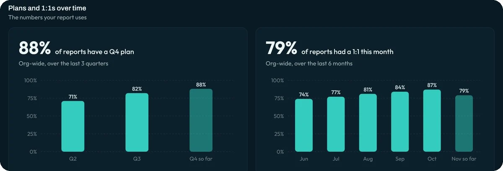

Building a feature is half the job. The other half is making sure the right people know it exists, get what it does, and can start without a call.
This fall I took three Ren features through launch. Each one was for a different person: a manager in a meeting, a manager in their AI tools, and an admin rolling Ren out to a company.
Ren Live
A desktop app that coaches managers during their meetings.
Ren in AI assistants
Ren inside Claude, ChatGPT and Cursor, through MCP.
Admin Insights
Shows admins who needs a nudge, and sends it in two clicks.
A coach that sits with you in the meeting
Ren Live listens to a 1:1 and helps while it’s happening. In sprint meetings I shaped the first version with engineering: chat instead of voice, shorter panels, a minimized view that’s still useful, and keeping Ren speaking up on its own separate from help you ask for. I wrote the sprint tickets, then built the launch page, where visitors download the right version for their computer without signing up first.



Meeting managers where they already work
A lot of managers now spend their day in an AI assistant, so we made Ren available there through MCP. I ran the launch: the release email to subscribers and users, the setup page, and a chapter in the in-app tour on connecting it. I also put together the ChatGPT app submission and shipped the server fixes OpenAI’s review asked for.

- Daily check-in with RenRen’s top items for today, one line each.
- Prep my 1:1 with RenWalks through 1:1 prep for whoever you name.
- Draft a mention with RenStarts feedback for someone, with Ren’s help.
- Reflect on my growth with RenA quick check-in on your growth theme.
Nothing sends without you. Every draft waits until you approve the exact words.
Left: connecting from inside Ren. Right: the four shortcuts that show up when you type / in your assistant.
Showing admins who needs a nudge
Admins rolling Ren out needed to know whether their leaders were actually using it. The new Insights page shows activity at a glance and sorts leaders into on track, quiet for 30+ days, and no plans set, with a note the admin can send to each group. I wrote the admin guide and launched it by email to every customer admin.


